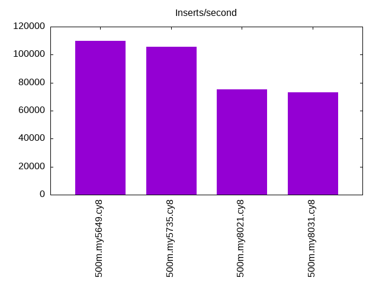
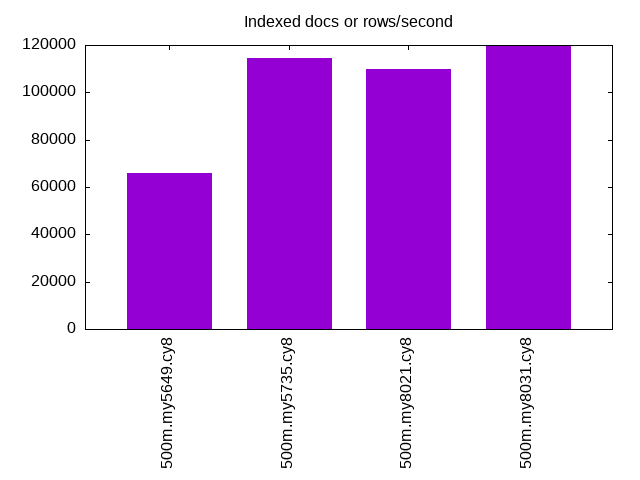
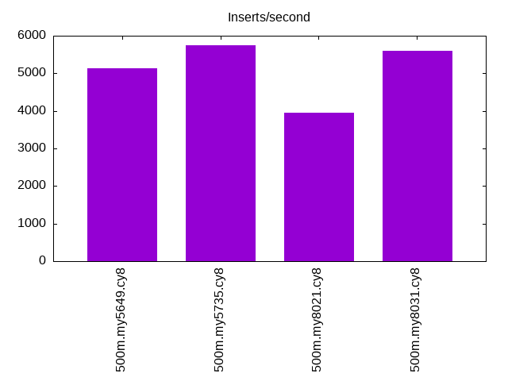
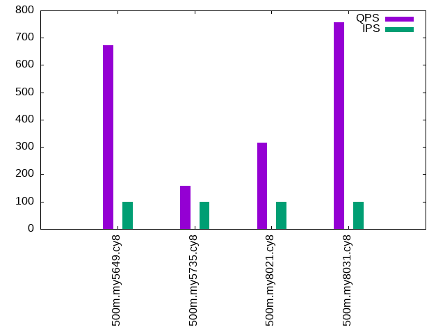
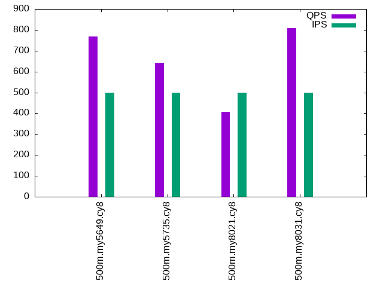
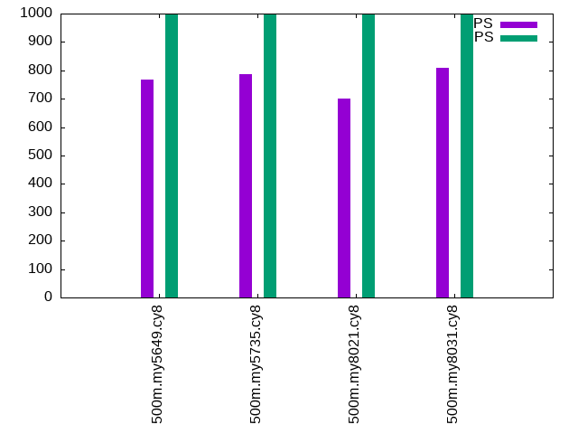

This is a report for the insert benchmark with 500M docs and 1 client(s). It is generated by scripts (bash, awk, sed) and Tufte might not be impressed. An overview of the insert benchmark is here and a short update is here. Below, by DBMS, I mean DBMS+version.config. An example is my8020.c10b40 where my means MySQL, 8020 is version 8.0.20 and c10b40 is the name for the configuration file.
The test server is an Intel NUC with 4 cores, 16G RAM and a Samsung 970 EVO. More details are here. Clients and the DBMS share one server. The per-database configs are in the per-database subdirectories here.
The tested DBMS are:
The numbers are inserts/s for l.i0 and l.i1, indexed docs (or rows) /s for l.x and queries/s for q*.2. The values are the average rate over the entire test for inserts (IPS) and queries (QPS). The range of values for IPS and QPS is split into 3 parts: bottom 25%, middle 50%, top 25%. Values in the bottom 25% have a red background, values in the top 25% have a green background and values in the middle have no color. A gray background is used for values that can be ignored because the DBMS did not sustain the target insert rate. Red backgrounds are not used when the minimum value is within 80% of the max value.
| dbms | l.i0 | l.x | l.i1 | q100.1 | q500.1 | q1000.1 |
|---|---|---|---|---|---|---|
| 500m.my5649.cy8 | 109963 | 66081 | 5131 | 672 | 768 | 769 |
| 500m.my5735.cy8 | 105664 | 114466 | 5737 | 157 | 643 | 788 |
| 500m.my8021.cy8 | 75312 | 109791 | 3954 | 315 | 408 | 700 |
| 500m.my8031.cy8 | 73271 | 119784 | 5605 | 757 | 807 | 810 |
This lists the average rate of inserts/s for the tests that do inserts concurrent with queries. For such tests the query rate is listed in the table above. The read+write tests are setup so that the insert rate should match the target rate every second. Cells that are not at least 95% of the target have a red background to indicate a failure to satisfy the target.
| dbms | q100.1 | q500.1 | q1000.1 |
|---|---|---|---|
| my5649.cy8 | 100 | 499 | 999 |
| my5735.cy8 | 100 | 499 | 999 |
| my8021.cy8 | 100 | 499 | 999 |
| my8031.cy8 | 100 | 499 | 999 |
| target | 100 | 500 | 1000 |
l.i0: load without secondary indexes. Graphs for performance per 1-second interval are here.
Average throughput:
Insert response time histogram: each cell has the percentage of responses that take <= the time in the header and max is the max response time in seconds. For the max column values in the top 25% of the range have a red background and in the bottom 25% of the range have a green background. The red background is not used when the min value is within 80% of the max value.
| dbms | 256us | 1ms | 4ms | 16ms | 64ms | 256ms | 1s | 4s | 16s | gt | max |
|---|---|---|---|---|---|---|---|---|---|---|---|
| my5649.cy8 | 96.840 | 2.765 | 0.309 | 0.083 | 0.001 | 0.003 | 0.382 | ||||
| my5735.cy8 | 98.437 | 1.327 | 0.164 | 0.069 | 0.004 | 0.138 | |||||
| my8021.cy8 | 99.569 | 0.345 | 0.086 | nonzero | 0.112 | ||||||
| my8031.cy8 | 99.627 | 0.279 | 0.093 | nonzero | 0.085 |
Performance metrics for the DBMS listed above. Some are normalized by throughput, others are not. Legend for results is here.
ips qps rps rmbps wps wmbps rpq rkbpq wpi wkbpi csps cpups cspq cpupq dbgb1 dbgb2 rss maxop p50 p99 tag 109963 0 963 3.8 438.6 36.9 0.009 0.035 0.004 0.343 13883 38.4 0.126 14 32.9 73.4 10.6 0.382 110782 76615 500m.my5649.cy8 105664 0 0 0.0 453.6 36.0 0.000 0.000 0.004 0.349 11672 40.3 0.110 15 32.9 73.4 10.9 0.138 105787 94596 500m.my5735.cy8 75312 0 0 0.0 402.9 26.9 0.000 0.000 0.005 0.366 19218 38.2 0.255 20 32.8 73.3 11.1 0.112 75232 70468 500m.my8021.cy8 73271 0 0 0.0 444.4 27.9 0.000 0.000 0.006 0.389 8531 34.2 0.116 19 32.8 35.2 11.1 0.085 73120 69025 500m.my8031.cy8
l.x: create secondary indexes.
Average throughput:
Performance metrics for the DBMS listed above. Some are normalized by throughput, others are not. Legend for results is here.
ips qps rps rmbps wps wmbps rpq rkbpq wpi wkbpi csps cpups cspq cpupq dbgb1 dbgb2 rss maxop p50 p99 tag 66081 0 406 59.1 720.2 80.7 0.006 0.916 0.011 1.251 2436 18.0 0.037 11 67.8 108.3 10.3 0.027 NA NA 500m.my5649.cy8 114466 0 624 98.8 1107.0 126.0 0.005 0.884 0.010 1.127 6841 21.6 0.060 8 73.6 114.1 10.2 0.016 NA NA 500m.my5735.cy8 109791 0 588 94.7 1167.0 120.8 0.005 0.883 0.011 1.127 7013 22.0 0.064 8 73.3 113.8 10.2 0.015 NA NA 500m.my8021.cy8 119784 0 2025 173.0 2402.7 154.2 0.017 1.479 0.020 1.318 9419 69.4 0.079 23 73.3 75.7 10.4 0.015 NA NA 500m.my8031.cy8
l.i1: continue load after secondary indexes created. Graphs for performance per 1-second interval are here.
Average throughput:
Insert response time histogram: each cell has the percentage of responses that take <= the time in the header and max is the max response time in seconds. For the max column values in the top 25% of the range have a red background and in the bottom 25% of the range have a green background. The red background is not used when the min value is within 80% of the max value.
| dbms | 256us | 1ms | 4ms | 16ms | 64ms | 256ms | 1s | 4s | 16s | gt | max |
|---|---|---|---|---|---|---|---|---|---|---|---|
| my5649.cy8 | 70.111 | 16.309 | 11.618 | 1.623 | 0.339 | 0.001 | 2.077 | ||||
| my5735.cy8 | 66.790 | 22.668 | 9.370 | 0.865 | 0.307 | 0.623 | |||||
| my8021.cy8 | 61.567 | 22.748 | 11.469 | 4.043 | 0.174 | 0.553 | |||||
| my8031.cy8 | 65.641 | 22.502 | 10.789 | 0.816 | 0.253 | 0.579 |
Performance metrics for the DBMS listed above. Some are normalized by throughput, others are not. Legend for results is here.
ips qps rps rmbps wps wmbps rpq rkbpq wpi wkbpi csps cpups cspq cpupq dbgb1 dbgb2 rss maxop p50 p99 tag 5131 0 2671 40.7 3734.3 134.3 0.521 8.117 0.728 26.807 15569 17.5 3.034 136 101.8 144.2 10.4 2.077 1448 100 500m.my5649.cy8 5737 0 2877 44.9 4071.8 143.9 0.501 8.023 0.710 25.687 18524 22.5 3.229 157 101.8 144.3 10.6 0.623 2547 300 500m.my5735.cy8 3954 0 2008 31.4 3544.5 103.0 0.508 8.125 0.896 26.682 23052 24.4 5.830 247 101.4 143.9 10.4 0.553 1050 250 500m.my8021.cy8 5605 0 2839 44.4 5775.3 169.8 0.506 8.103 1.030 31.020 23740 23.7 4.235 169 101.4 105.8 10.6 0.579 2848 350 500m.my8031.cy8
q100.1: range queries with 100 insert/s per client. Graphs for performance per 1-second interval are here.
Average throughput:
Query response time histogram: each cell has the percentage of responses that take <= the time in the header and max is the max response time in seconds. For max values in the top 25% of the range have a red background and in the bottom 25% of the range have a green background. The red background is not used when the min value is within 80% of the max value.
| dbms | 256us | 1ms | 4ms | 16ms | 64ms | 256ms | 1s | 4s | 16s | gt | max |
|---|---|---|---|---|---|---|---|---|---|---|---|
| my5649.cy8 | 3.322 | 46.532 | 49.340 | 0.666 | 0.137 | 0.002 | 0.114 | ||||
| my5735.cy8 | 5.061 | 27.974 | 50.109 | 2.517 | 14.303 | 0.036 | 0.143 | ||||
| my8021.cy8 | 2.389 | 37.777 | 53.601 | 1.328 | 4.898 | 0.008 | 0.138 | ||||
| my8031.cy8 | 6.929 | 40.321 | 51.906 | 0.730 | 0.111 | 0.004 | 0.133 |
Insert response time histogram: each cell has the percentage of responses that take <= the time in the header and max is the max response time in seconds. For max values in the top 25% of the range have a red background and in the bottom 25% of the range have a green background. The red background is not used when the min value is within 80% of the max value.
| dbms | 256us | 1ms | 4ms | 16ms | 64ms | 256ms | 1s | 4s | 16s | gt | max |
|---|---|---|---|---|---|---|---|---|---|---|---|
| my5649.cy8 | 2.597 | 59.431 | 37.625 | 0.347 | 0.091 | ||||||
| my5735.cy8 | 28.958 | 64.250 | 6.792 | 0.044 | |||||||
| my8021.cy8 | 4.167 | 70.903 | 24.889 | 0.042 | 0.084 | ||||||
| my8031.cy8 | 0.903 | 85.583 | 13.264 | 0.250 | 0.102 |
Performance metrics for the DBMS listed above. Some are normalized by throughput, others are not. Legend for results is here.
ips qps rps rmbps wps wmbps rpq rkbpq wpi wkbpi csps cpups cspq cpupq dbgb1 dbgb2 rss maxop p50 p99 tag 100 672 3244 50.7 608.3 18.4 4.828 77.202 6.095 188.833 10376 16.2 15.443 964 101.8 144.3 10.4 0.114 655 447 500m.my5649.cy8 100 157 834 13.0 393.4 11.8 5.319 85.097 3.942 121.386 3496 7.0 22.284 1785 101.8 144.3 10.6 0.143 64 32 500m.my5735.cy8 100 315 1574 24.6 585.6 14.7 4.992 79.865 5.867 150.659 8100 12.1 25.683 1535 101.4 143.9 10.4 0.138 80 32 500m.my8021.cy8 100 757 3631 56.7 770.8 19.3 4.796 76.740 7.724 197.979 12268 16.3 16.207 861 101.4 105.8 10.6 0.133 751 543 500m.my8031.cy8
q500.1: range queries with 500 insert/s per client. Graphs for performance per 1-second interval are here.
Average throughput:
Query response time histogram: each cell has the percentage of responses that take <= the time in the header and max is the max response time in seconds. For max values in the top 25% of the range have a red background and in the bottom 25% of the range have a green background. The red background is not used when the min value is within 80% of the max value.
| dbms | 256us | 1ms | 4ms | 16ms | 64ms | 256ms | 1s | 4s | 16s | gt | max |
|---|---|---|---|---|---|---|---|---|---|---|---|
| my5649.cy8 | 6.499 | 43.563 | 49.456 | 0.377 | 0.105 | 0.049 | |||||
| my5735.cy8 | 11.284 | 36.922 | 50.326 | 0.525 | 0.943 | nonzero | 0.075 | ||||
| my8021.cy8 | 5.568 | 35.507 | 55.000 | 0.791 | 3.134 | 0.059 | |||||
| my8031.cy8 | 10.102 | 37.002 | 52.304 | 0.463 | 0.129 | 0.048 |
Insert response time histogram: each cell has the percentage of responses that take <= the time in the header and max is the max response time in seconds. For max values in the top 25% of the range have a red background and in the bottom 25% of the range have a green background. The red background is not used when the min value is within 80% of the max value.
| dbms | 256us | 1ms | 4ms | 16ms | 64ms | 256ms | 1s | 4s | 16s | gt | max |
|---|---|---|---|---|---|---|---|---|---|---|---|
| my5649.cy8 | 57.014 | 41.544 | 1.439 | 0.003 | 0.070 | ||||||
| my5735.cy8 | 66.539 | 33.169 | 0.292 | 0.053 | |||||||
| my8021.cy8 | 37.931 | 61.053 | 1.017 | 0.047 | |||||||
| my8031.cy8 | 53.158 | 46.147 | 0.694 | 0.040 |
Performance metrics for the DBMS listed above. Some are normalized by throughput, others are not. Legend for results is here.
ips qps rps rmbps wps wmbps rpq rkbpq wpi wkbpi csps cpups cspq cpupq dbgb1 dbgb2 rss maxop p50 p99 tag 499 768 3629 56.6 422.2 13.0 4.728 75.491 0.846 26.633 11153 15.7 14.529 818 101.9 144.4 10.4 0.049 751 591 500m.my5649.cy8 499 643 3037 47.5 477.8 14.5 4.723 75.570 0.957 29.686 9877 14.1 15.361 877 101.9 144.4 10.6 0.075 735 48 500m.my5735.cy8 499 408 1950 30.5 432.4 11.0 4.782 76.518 0.866 22.522 9430 14.3 23.123 1403 101.6 144.1 10.4 0.059 591 48 500m.my8021.cy8 499 807 3803 59.4 672.7 17.0 4.713 75.403 1.347 34.917 12501 16.6 15.491 823 101.6 105.9 10.6 0.048 799 591 500m.my8031.cy8
q1000.1: range queries with 1000 insert/s per client. Graphs for performance per 1-second interval are here.
Average throughput:
Query response time histogram: each cell has the percentage of responses that take <= the time in the header and max is the max response time in seconds. For max values in the top 25% of the range have a red background and in the bottom 25% of the range have a green background. The red background is not used when the min value is within 80% of the max value.
| dbms | 256us | 1ms | 4ms | 16ms | 64ms | 256ms | 1s | 4s | 16s | gt | max |
|---|---|---|---|---|---|---|---|---|---|---|---|
| my5649.cy8 | 8.403 | 40.352 | 50.719 | 0.367 | 0.159 | 0.058 | |||||
| my5735.cy8 | 13.874 | 34.101 | 51.492 | 0.392 | 0.141 | 0.060 | |||||
| my8021.cy8 | 7.345 | 35.446 | 56.626 | 0.427 | 0.156 | 0.060 | |||||
| my8031.cy8 | 12.706 | 33.650 | 52.978 | 0.499 | 0.168 | 0.060 |
Insert response time histogram: each cell has the percentage of responses that take <= the time in the header and max is the max response time in seconds. For max values in the top 25% of the range have a red background and in the bottom 25% of the range have a green background. The red background is not used when the min value is within 80% of the max value.
| dbms | 256us | 1ms | 4ms | 16ms | 64ms | 256ms | 1s | 4s | 16s | gt | max |
|---|---|---|---|---|---|---|---|---|---|---|---|
| my5649.cy8 | 74.311 | 24.900 | 0.789 | 0.050 | |||||||
| my5735.cy8 | 78.950 | 20.772 | 0.278 | 0.050 | |||||||
| my8021.cy8 | 51.644 | 47.717 | 0.637 | 0.001 | 0.066 | ||||||
| my8031.cy8 | 71.678 | 27.456 | 0.867 | 0.060 |
Performance metrics for the DBMS listed above. Some are normalized by throughput, others are not. Legend for results is here.
ips qps rps rmbps wps wmbps rpq rkbpq wpi wkbpi csps cpups cspq cpupq dbgb1 dbgb2 rss maxop p50 p99 tag 999 769 3684 57.3 656.7 20.3 4.788 76.325 0.658 20.817 12036 16.2 15.646 842 102.2 144.6 10.4 0.058 751 607 500m.my5649.cy8 999 788 3755 58.7 667.2 20.5 4.767 76.265 0.668 20.994 12441 16.9 15.794 858 102.2 144.6 10.6 0.060 783 575 500m.my5735.cy8 999 700 3342 52.2 768.8 19.7 4.778 76.442 0.770 20.153 15095 21.2 21.577 1212 101.8 144.3 10.4 0.060 688 559 500m.my8021.cy8 999 810 3855 60.2 1136.7 28.9 4.760 76.158 1.138 29.680 13966 17.4 17.244 859 101.8 106.2 10.6 0.060 799 591 500m.my8031.cy8
l.i0: load without secondary indexes
Performance metrics for all DBMS, not just the ones listed above. Some are normalized by throughput, others are not. Legend for results is here.
ips qps rps rmbps wps wmbps rpq rkbpq wpi wkbpi csps cpups cspq cpupq dbgb1 dbgb2 rss maxop p50 p99 tag 109963 0 963 3.8 438.6 36.9 0.009 0.035 0.004 0.343 13883 38.4 0.126 14 32.9 73.4 10.6 0.382 110782 76615 500m.my5649.cy8 105664 0 0 0.0 453.6 36.0 0.000 0.000 0.004 0.349 11672 40.3 0.110 15 32.9 73.4 10.9 0.138 105787 94596 500m.my5735.cy8 75312 0 0 0.0 402.9 26.9 0.000 0.000 0.005 0.366 19218 38.2 0.255 20 32.8 73.3 11.1 0.112 75232 70468 500m.my8021.cy8 73271 0 0 0.0 444.4 27.9 0.000 0.000 0.006 0.389 8531 34.2 0.116 19 32.8 35.2 11.1 0.085 73120 69025 500m.my8031.cy8
l.x: create secondary indexes
Performance metrics for all DBMS, not just the ones listed above. Some are normalized by throughput, others are not. Legend for results is here.
ips qps rps rmbps wps wmbps rpq rkbpq wpi wkbpi csps cpups cspq cpupq dbgb1 dbgb2 rss maxop p50 p99 tag 66081 0 406 59.1 720.2 80.7 0.006 0.916 0.011 1.251 2436 18.0 0.037 11 67.8 108.3 10.3 0.027 NA NA 500m.my5649.cy8 114466 0 624 98.8 1107.0 126.0 0.005 0.884 0.010 1.127 6841 21.6 0.060 8 73.6 114.1 10.2 0.016 NA NA 500m.my5735.cy8 109791 0 588 94.7 1167.0 120.8 0.005 0.883 0.011 1.127 7013 22.0 0.064 8 73.3 113.8 10.2 0.015 NA NA 500m.my8021.cy8 119784 0 2025 173.0 2402.7 154.2 0.017 1.479 0.020 1.318 9419 69.4 0.079 23 73.3 75.7 10.4 0.015 NA NA 500m.my8031.cy8
l.i1: continue load after secondary indexes created
Performance metrics for all DBMS, not just the ones listed above. Some are normalized by throughput, others are not. Legend for results is here.
ips qps rps rmbps wps wmbps rpq rkbpq wpi wkbpi csps cpups cspq cpupq dbgb1 dbgb2 rss maxop p50 p99 tag 5131 0 2671 40.7 3734.3 134.3 0.521 8.117 0.728 26.807 15569 17.5 3.034 136 101.8 144.2 10.4 2.077 1448 100 500m.my5649.cy8 5737 0 2877 44.9 4071.8 143.9 0.501 8.023 0.710 25.687 18524 22.5 3.229 157 101.8 144.3 10.6 0.623 2547 300 500m.my5735.cy8 3954 0 2008 31.4 3544.5 103.0 0.508 8.125 0.896 26.682 23052 24.4 5.830 247 101.4 143.9 10.4 0.553 1050 250 500m.my8021.cy8 5605 0 2839 44.4 5775.3 169.8 0.506 8.103 1.030 31.020 23740 23.7 4.235 169 101.4 105.8 10.6 0.579 2848 350 500m.my8031.cy8
q100.1: range queries with 100 insert/s per client
Performance metrics for all DBMS, not just the ones listed above. Some are normalized by throughput, others are not. Legend for results is here.
ips qps rps rmbps wps wmbps rpq rkbpq wpi wkbpi csps cpups cspq cpupq dbgb1 dbgb2 rss maxop p50 p99 tag 100 672 3244 50.7 608.3 18.4 4.828 77.202 6.095 188.833 10376 16.2 15.443 964 101.8 144.3 10.4 0.114 655 447 500m.my5649.cy8 100 157 834 13.0 393.4 11.8 5.319 85.097 3.942 121.386 3496 7.0 22.284 1785 101.8 144.3 10.6 0.143 64 32 500m.my5735.cy8 100 315 1574 24.6 585.6 14.7 4.992 79.865 5.867 150.659 8100 12.1 25.683 1535 101.4 143.9 10.4 0.138 80 32 500m.my8021.cy8 100 757 3631 56.7 770.8 19.3 4.796 76.740 7.724 197.979 12268 16.3 16.207 861 101.4 105.8 10.6 0.133 751 543 500m.my8031.cy8
q500.1: range queries with 500 insert/s per client
Performance metrics for all DBMS, not just the ones listed above. Some are normalized by throughput, others are not. Legend for results is here.
ips qps rps rmbps wps wmbps rpq rkbpq wpi wkbpi csps cpups cspq cpupq dbgb1 dbgb2 rss maxop p50 p99 tag 499 768 3629 56.6 422.2 13.0 4.728 75.491 0.846 26.633 11153 15.7 14.529 818 101.9 144.4 10.4 0.049 751 591 500m.my5649.cy8 499 643 3037 47.5 477.8 14.5 4.723 75.570 0.957 29.686 9877 14.1 15.361 877 101.9 144.4 10.6 0.075 735 48 500m.my5735.cy8 499 408 1950 30.5 432.4 11.0 4.782 76.518 0.866 22.522 9430 14.3 23.123 1403 101.6 144.1 10.4 0.059 591 48 500m.my8021.cy8 499 807 3803 59.4 672.7 17.0 4.713 75.403 1.347 34.917 12501 16.6 15.491 823 101.6 105.9 10.6 0.048 799 591 500m.my8031.cy8
q1000.1: range queries with 1000 insert/s per client
Performance metrics for all DBMS, not just the ones listed above. Some are normalized by throughput, others are not. Legend for results is here.
ips qps rps rmbps wps wmbps rpq rkbpq wpi wkbpi csps cpups cspq cpupq dbgb1 dbgb2 rss maxop p50 p99 tag 999 769 3684 57.3 656.7 20.3 4.788 76.325 0.658 20.817 12036 16.2 15.646 842 102.2 144.6 10.4 0.058 751 607 500m.my5649.cy8 999 788 3755 58.7 667.2 20.5 4.767 76.265 0.668 20.994 12441 16.9 15.794 858 102.2 144.6 10.6 0.060 783 575 500m.my5735.cy8 999 700 3342 52.2 768.8 19.7 4.778 76.442 0.770 20.153 15095 21.2 21.577 1212 101.8 144.3 10.4 0.060 688 559 500m.my8021.cy8 999 810 3855 60.2 1136.7 28.9 4.760 76.158 1.138 29.680 13966 17.4 17.244 859 101.8 106.2 10.6 0.060 799 591 500m.my8031.cy8
Insert response time histogram
256us 1ms 4ms 16ms 64ms 256ms 1s 4s 16s gt max tag 0.000 96.840 2.765 0.309 0.083 0.001 0.003 0.000 0.000 0.000 0.382 my5649.cy8 0.000 98.437 1.327 0.164 0.069 0.004 0.000 0.000 0.000 0.000 0.138 my5735.cy8 0.000 0.000 99.569 0.345 0.086 nonzero 0.000 0.000 0.000 0.000 0.112 my8021.cy8 0.000 0.000 99.627 0.279 0.093 nonzero 0.000 0.000 0.000 0.000 0.085 my8031.cy8
TODO - determine whether there is data for create index response time
Insert response time histogram
256us 1ms 4ms 16ms 64ms 256ms 1s 4s 16s gt max tag 0.000 0.000 70.111 16.309 11.618 1.623 0.339 0.001 0.000 0.000 2.077 my5649.cy8 0.000 0.000 66.790 22.668 9.370 0.865 0.307 0.000 0.000 0.000 0.623 my5735.cy8 0.000 0.000 61.567 22.748 11.469 4.043 0.174 0.000 0.000 0.000 0.553 my8021.cy8 0.000 0.000 65.641 22.502 10.789 0.816 0.253 0.000 0.000 0.000 0.579 my8031.cy8
Query response time histogram
256us 1ms 4ms 16ms 64ms 256ms 1s 4s 16s gt max tag 3.322 46.532 49.340 0.666 0.137 0.002 0.000 0.000 0.000 0.000 0.114 my5649.cy8 5.061 27.974 50.109 2.517 14.303 0.036 0.000 0.000 0.000 0.000 0.143 my5735.cy8 2.389 37.777 53.601 1.328 4.898 0.008 0.000 0.000 0.000 0.000 0.138 my8021.cy8 6.929 40.321 51.906 0.730 0.111 0.004 0.000 0.000 0.000 0.000 0.133 my8031.cy8
Insert response time histogram
256us 1ms 4ms 16ms 64ms 256ms 1s 4s 16s gt max tag 0.000 0.000 2.597 59.431 37.625 0.347 0.000 0.000 0.000 0.000 0.091 my5649.cy8 0.000 0.000 28.958 64.250 6.792 0.000 0.000 0.000 0.000 0.000 0.044 my5735.cy8 0.000 0.000 4.167 70.903 24.889 0.042 0.000 0.000 0.000 0.000 0.084 my8021.cy8 0.000 0.000 0.903 85.583 13.264 0.250 0.000 0.000 0.000 0.000 0.102 my8031.cy8
Query response time histogram
256us 1ms 4ms 16ms 64ms 256ms 1s 4s 16s gt max tag 6.499 43.563 49.456 0.377 0.105 0.000 0.000 0.000 0.000 0.000 0.049 my5649.cy8 11.284 36.922 50.326 0.525 0.943 nonzero 0.000 0.000 0.000 0.000 0.075 my5735.cy8 5.568 35.507 55.000 0.791 3.134 0.000 0.000 0.000 0.000 0.000 0.059 my8021.cy8 10.102 37.002 52.304 0.463 0.129 0.000 0.000 0.000 0.000 0.000 0.048 my8031.cy8
Insert response time histogram
256us 1ms 4ms 16ms 64ms 256ms 1s 4s 16s gt max tag 0.000 0.000 57.014 41.544 1.439 0.003 0.000 0.000 0.000 0.000 0.070 my5649.cy8 0.000 0.000 66.539 33.169 0.292 0.000 0.000 0.000 0.000 0.000 0.053 my5735.cy8 0.000 0.000 37.931 61.053 1.017 0.000 0.000 0.000 0.000 0.000 0.047 my8021.cy8 0.000 0.000 53.158 46.147 0.694 0.000 0.000 0.000 0.000 0.000 0.040 my8031.cy8
Query response time histogram
256us 1ms 4ms 16ms 64ms 256ms 1s 4s 16s gt max tag 8.403 40.352 50.719 0.367 0.159 0.000 0.000 0.000 0.000 0.000 0.058 my5649.cy8 13.874 34.101 51.492 0.392 0.141 0.000 0.000 0.000 0.000 0.000 0.060 my5735.cy8 7.345 35.446 56.626 0.427 0.156 0.000 0.000 0.000 0.000 0.000 0.060 my8021.cy8 12.706 33.650 52.978 0.499 0.168 0.000 0.000 0.000 0.000 0.000 0.060 my8031.cy8
Insert response time histogram
256us 1ms 4ms 16ms 64ms 256ms 1s 4s 16s gt max tag 0.000 0.000 74.311 24.900 0.789 0.000 0.000 0.000 0.000 0.000 0.050 my5649.cy8 0.000 0.000 78.950 20.772 0.278 0.000 0.000 0.000 0.000 0.000 0.050 my5735.cy8 0.000 0.000 51.644 47.717 0.637 0.001 0.000 0.000 0.000 0.000 0.066 my8021.cy8 0.000 0.000 71.678 27.456 0.867 0.000 0.000 0.000 0.000 0.000 0.060 my8031.cy8